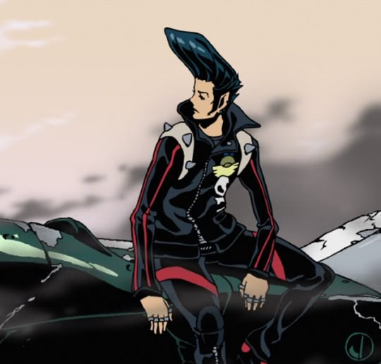

Genel Bilgiler
Tam Adı: Sweet JP
Seri: Redline
İlk Görünüş: Redline (2009)
Cinsiyet: Erkek
Durumu: Hayatta
Fiziksel Özellikler
Yaşı: Yaklaşık 20’lerin sonu
Boyu: 180 cm civarı
Saç Rengi: Uzun siyah saç
Göz Rengi: Kahverengi
Ayırt Edici Özellikleri:
Uzun saçları, asi görünümü ve retro tarzıyla dikkat çeker. Kendi arabasıyla yarışır, klasik “hot-rod” havası taşır.
Kimlik Bilgileri
Doğum Yeri: Bilinmiyor
Bağlı Olduğu Grup: Bağımsız yarışçı
Ülkesi: Geleceğin dünyası (Redline evreni)
Araç: Trans-Am modifiyeli yarış arabası
Aile ve Yakın Çevresi
Yakın Arkadaşı: Mekanikçi Frisbee
Aşkı: Sonoshee McLaren
Destek Ekibi: JP’nin yarışlarda yanında olan küçük ekibi

JP
Savaş/Yarış Bilgileri
Mesleği: Yarışçı
Uzmanlık Alanları: Araç kontrolü, hız, risk alma, cesaret
Özel Özellik: Kuralsız Redline yarışında hayatta kalma ve rakiplerini geride bırakma yeteneği
Kişilik Özellikleri
Asi, cesur, tutkulu, risk almaktan çekinmeyen, romantik, özgürlüğüne düşkün, kararlı. JP, hızın yalnızca bir yarış değil, aynı zamanda özgürlük sembolü olduğuna inanır.
Hedefleri
En Büyük Amacı: Redline yarışını kazanmak.
Yaşam Amacı: Hayallerini gerçekleştirmek ve Sonoshee ile birlikte özgür bir yaşam sürmek.
İlişkileri
En Yakın Arkadaşı: Frisbee
Aşkı: Sonoshee McLaren
Rakipleri: Redline’daki ölümcül yarışçılar ve teknolojik araçlar
Kişisel Bilgiler
Sevdiği Şey: Hız, yarış arabaları, özgürlük
Sevmediği Şey: Kurallara bağlı yarışlar
Hobileri: Araç modifikasyonu, yarış pistinde antrenman
Güç Seviyesi
Risk Alma: ★★★★★
Hız: ★★★★★
Dayanıklılık: ★★★★☆
Zekâ: ★★★★☆
Yarış Yeteneği: ★★★★★
Seslendirme
Japonca Seslendirme: Takuya Kimura
İngilizce Seslendirme: Patrick Seitz